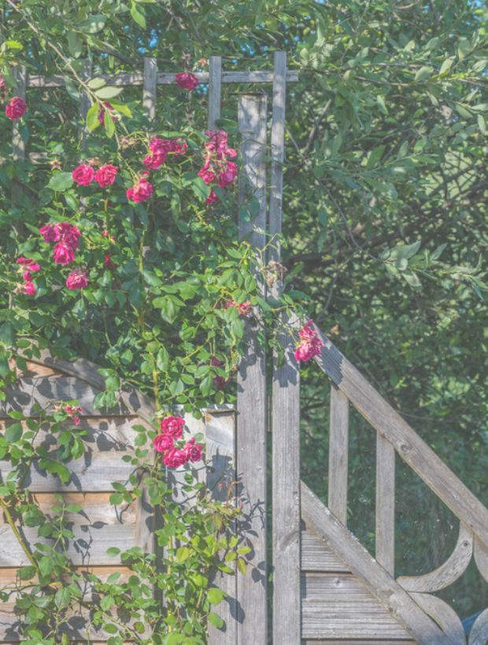
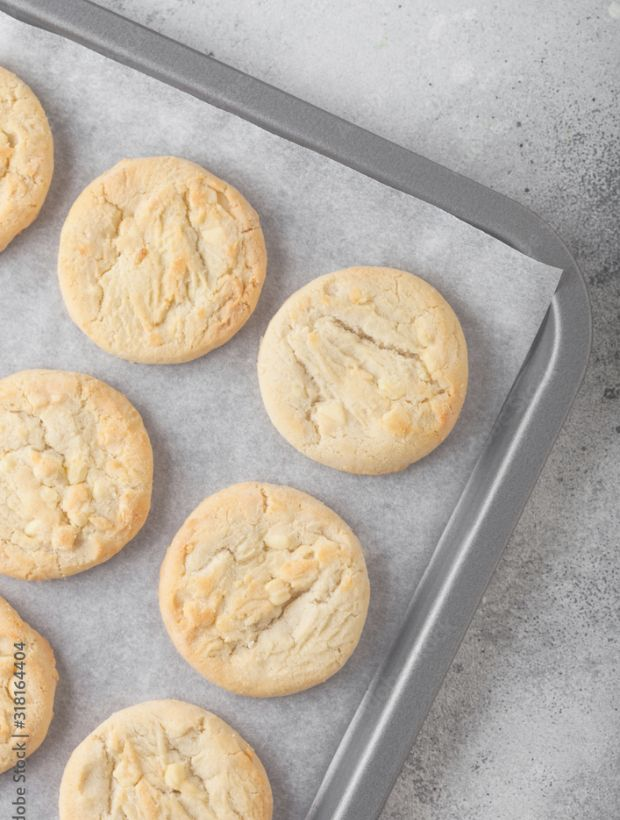
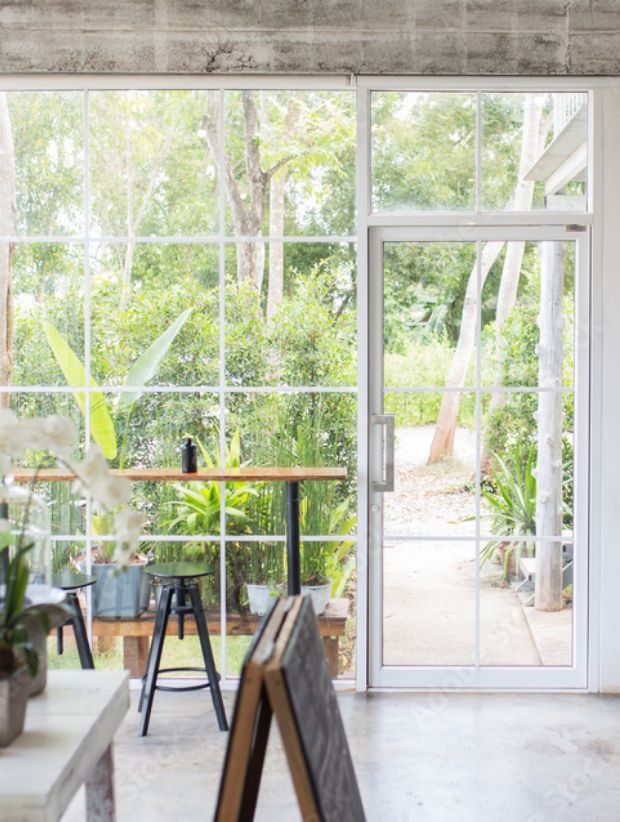

海を望む
丘の上のベーカリー
沖縄県北中城村の
海を望む 丘の上のベーカリーカフェ

〒901-2316
沖縄県 中頭郡 北中城村 安谷屋 927-2 ▶Google Map
おきなわけん なかがみぐん きたなかぐすくそん あだにや
Ploughman's lunch backery
沖縄県 中頭郡 北中城村 安谷屋 927-2 ▶Google Map
おきなわけん なかがみぐん きたなかぐすくそん あだにや
TEL/FAX： 098-(979)-9097
営業時間： 8:00 - 16:00 9:00 ‐ 16:00 （L.O 15:00）
定休日： 日曜日
※現在、営業時間を短縮しております。
※パンの通販は引き続き、全国配送しております。
●ご予約： 当日の電話予約のみ承っております。
●お問合せ： ご質問などはお気軽にお電話ください。
取材のご依頼などについては、
下記メールアドレスまでご連絡ください。
okinawa@ploughmans.net